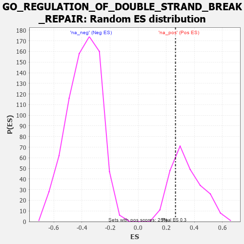

| | | Dataset | 7d |
| Phenotype | NoPhenotypeAvailable |
| Upregulated in class | na_pos |
| GeneSet | GO_REGULATION_OF_DOUBLE_STRAND_BREAK_REPAIR |
| Enrichment Score (ES) | 0.2659102 |
| Normalized Enrichment Score (NES) | 0.7712061 |
| Nominal p-value | 0.74596775 |
| FDR q-value | 0.9247489 |
| FWER p-Value | 1.0 |
Table: GSEA Results Summary
 Fig 1: Enrichment plot: GO_REGULATION_OF_DOUBLE_STRAND_BREAK_REPAIR
Fig 1: Enrichment plot: GO_REGULATION_OF_DOUBLE_STRAND_BREAK_REPAIR
Profile of the Running ES Score & Positions of GeneSet Members on the Rank Ordered List
| PROBE | GENE SYMBOL | GENE_TITLE | RANK IN GENE LIST | RANK METRIC SCORE | RUNNING ES | CORE ENRICHMENT | | 1 | RPA2 | | | 851 | 0.519 | -0.0174 | Yes |
| 2 | WDR70 | | | 1066 | 0.470 | 0.0368 | Yes |
| 3 | DEK | | | 1088 | 0.466 | 0.1147 | Yes |
| 4 | RAD51 | | | 1090 | 0.466 | 0.1949 | Yes |
| 5 | MRNIP | | | 1743 | 0.346 | 0.1727 | Yes |
| 6 | OTUB1 | | | 1857 | 0.326 | 0.2147 | Yes |
| 7 | MMS19 | | | 1924 | 0.317 | 0.2612 | Yes |
| 8 | KDM1A | | | 2447 | 0.237 | 0.2364 | Yes |
| 9 | ARID2 | | | 2664 | 0.204 | 0.2444 | Yes |
| 10 | NSD2 | | | 2784 | 0.185 | 0.2614 | Yes |
| 11 | RTEL1 | | | 3010 | 0.148 | 0.2587 | Yes |
| 12 | OGG1 | | | 3135 | 0.132 | 0.2659 | Yes |
| 13 | UBR5 | | | 3518 | 0.074 | 0.2307 | No |
| 14 | HSF1 | | | 3718 | 0.039 | 0.2124 | No |
| 15 | PARP1 | | | 4014 | -0.010 | 0.1770 | No |
| 16 | SETD2 | | | 4443 | -0.084 | 0.1376 | No |
| 17 | ERCC6 | | | 4464 | -0.087 | 0.1501 | No |
| 18 | PNKP | | | 4572 | -0.111 | 0.1557 | No |
| 19 | PRKDC | | | 4955 | -0.189 | 0.1404 | No |
| 20 | DDX11 | | | 5102 | -0.225 | 0.1608 | No |
| 21 | PARP3 | | | 7289 | -1.158 | 0.0858 | No |
Table: GSEA details [plain text format]

Fig 2: GO_REGULATION_OF_DOUBLE_STRAND_BREAK_REPAIR: Random ES distribution
Gene set null distribution of ES for GO_REGULATION_OF_DOUBLE_STRAND_BREAK_REPAIR